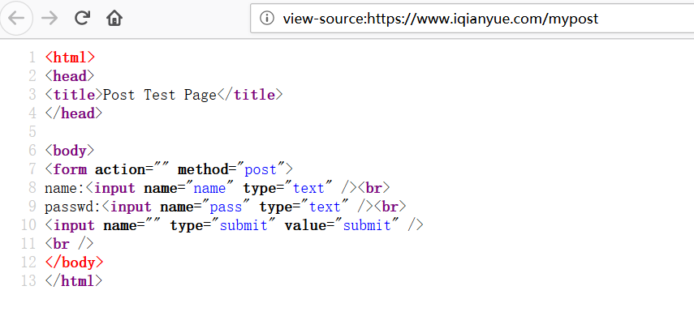
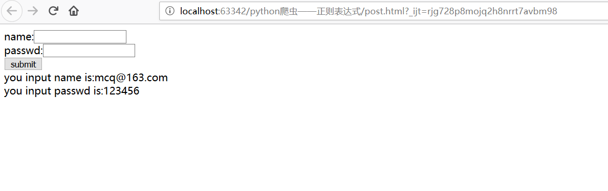
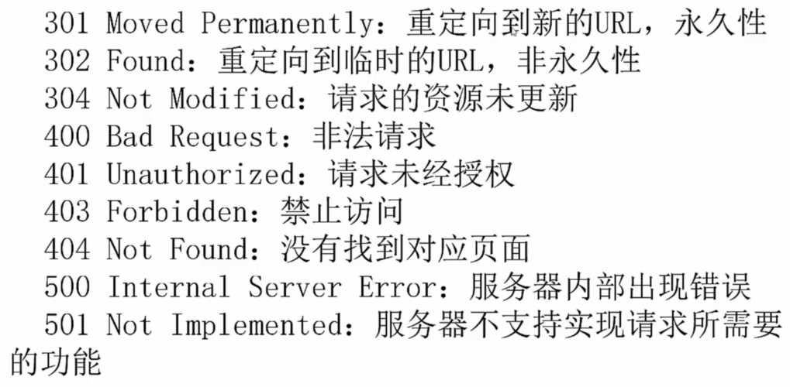
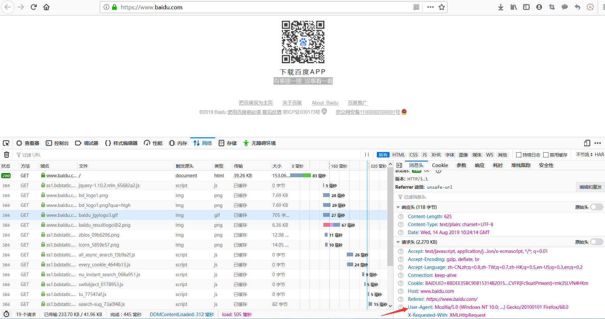

urlretrieve(网址,本地文件存储地址) 直接下载网页到本地
import urllib.request
#urlretrieve(网址,本地文件存储地址) 直接下载网页到本地
urllib.request.urlretrieve("http://www.baidu.com","dld.html")清除缓存
urllib.request.urlcleanup()查看网页简介
file=urllib.request.urlopen("http://www.baidu.com")
print(file.info())输出网页爬取状态码，200为正常，其他都不正常
file=urllib.request.urlopen("http://www.baidu.com")
print(file.getcode())获取当前访问的网页的url
file=urllib.request.urlopen("http://www.baidu.com")
print(file.geturl())timeout设置为多少秒才判断超时
import urllib.request
for i in range(1000):
try:
file = urllib.request.urlopen("https://www.cnblogs.com/mcq1999/", timeout=1)
print(len(file.read().decode("utf-8")))
except Exception as e:
print("出现异常")
模拟百度搜索python：
import urllib.request
import re
keywd="python"
url="http://www.baidu.com/s?wd="+keywd
data=urllib.request.urlopen(url).read().decode("utf-8")
pat='{"title":"(.*?)",'
res=re.compile(pat).findall(data)
print(res)
关键字为中文：
import urllib.request
import re
keywd="百度"
keywd=urllib.request.quote(keywd) #如果有中文
url="http://www.baidu.com/s?wd="+keywd
data=urllib.request.urlopen(url).read().decode("utf-8")
pat='{"title":"(.*?)",'
res=re.compile(pat).findall(data)
print(res)提取前1~10页：
import urllib.request
import re
keywd="百度"
keywd=urllib.request.quote(keywd) #如果有中文
# 页码公式：page=(num-1)*10
for i in range(1,11):
url="http://www.baidu.com/s?wd="+keywd+"&pn="+str((i-1)*10)
data=urllib.request.urlopen(url).read().decode("utf-8")
pat='{"title":"(.*?)",'
res=re.compile(pat).findall(data)
for j in range(len(res)):
print(res[j])
import urllib.request
import urllib.parse
posturl="https://www.iqianyue.com/mypost"
postdata=urllib.parse.urlencode({
"name":"mcq@163.com",
"pass":"123456",
}).encode("utf-8")
#进行post，需要使用urllib.request下面的Request(真实post地址,post数据)
req=urllib.request.Request(posturl,postdata)
res=urllib.request.urlopen(req).read().decode("utf-8")
print(res)
fh=open("post.html","w")
fh.write(res)
如果没有异常处理，爬虫遇到异常时就会直接崩溃停止运行，下次再次运行时，又会从头开始，所以，要开发一个具有顽强生命力的爬虫，必须要进行异常处理。

两者都是异常处理的类，HTTPError是URLError的子类，HTTPError有异常状态码与异常原因，URLError没有异常状态码，所以在处理的时候，不能使用URLError直接代替HTTPError。如果要代替，必须要判断是否有状态码属性。
URLError出现的原因：
import urllib.request
import urllib.error
for i in range(20):
try:
urllib.request.urlopen("https://www.cnblogs.com/mcq1999/p/python_Crawler_1.html")
print("gg")
except urllib.error.URLError as e:
if hasattr(e,"code"):
print(e.code)
if hasattr(e,"reason"):
print(e.reason)有的网站爬取的时候会返回403，因为对方服务器会对爬虫进行屏蔽。此时，我们要伪装成浏览器才能爬取。
浏览器伪装一般通过报头实现。

由于urlopen()对于一些HTTP的高级功能不支持，所以要修改报头，可以使用urllib.request.build_opener()或urllib.request.Request()下的add_header()实现浏览器的模拟。
opener的全局安装在下面的糗事百科爬虫里有应用
import urllib.request
url="https://blog.csdn.net/"
#头文件格式header=("User-Agent",具体用户代理制)
headers=("User-Agent","Mozilla/5.0 (Windows NT 10.0; Win64; x64; rv:68.0) Gecko/20100101 Firefox/68.0")
opener=urllib.request.build_opener()
opener.addheaders=[headers]
data=opener.open(url).read()
fh=open("ua.html","wb")
fh.write(data)
fh.close()需求：将新浪新闻首页所有新闻都爬倒本地
思路：先爬首页，通过正则表达式获取所有新闻链接，然后依次爬各新闻，并存储到本地
import urllib.request
import re
url="https://news.sina.com.cn/"
data=urllib.request.urlopen(url).read().decode("utf-8","ignore") #忽略有异常的编码
pat1='<a target="_blank" href="(.*?)"'
alllink=re.compile(pat1).findall(data)
for i in range(len(alllink)):
thislink=alllink[i]
urllib.request.urlopen(thislink).read().decode("utf-8","ignore")
urllib.request.urlretrieve(thislink,"news/"+str(i)+".html")目标1：爬取糗事百科首页的内容（包括视频、图片）
涉及伪装浏览器、opener安装为全局等知识
import urllib.request
import re
url="https://www.qiushibaike.com/"
#测试是否需要伪装浏览器
try:
urllib.request.urlopen(url)
except Exception as e:
print(e)
#显示Remote end closed connection without response，要伪装
headers=("User-Agent","Mozilla/5.0 (Windows NT 10.0; Win64; x64; rv:68.0) Gecko/20100101 Firefox/68.0")
opener=urllib.request.build_opener()
opener.addheaders=[headers]
urllib.request.install_opener(opener) #安装为全局
data=urllib.request.urlopen(url).read().decode("utf-8","ignore")
pat='<a class="recmd-content" href="/(.*?)"'
alllink=re.compile(pat).findall(data)
for i in range(len(alllink)):
realurl=url+alllink[i]
print(realurl)
urllib.request.urlretrieve(realurl,"糗事百科/"+str(i)+".html")目标2：爬取1~10页的文章
import urllib.request
import re
headers=("User-Agent","Mozilla/5.0 (Windows NT 10.0; Win64; x64; rv:68.0) Gecko/20100101 Firefox/68.0")
opener=urllib.request.build_opener()
opener.addheaders=[headers]
urllib.request.install_opener(opener) #安装为全局
for i in range(10):
thisurl="https://www.qiushibaike.com/text/page/"+str(i+1)+"/";
data=urllib.request.urlopen(thisurl).read().decode("utf-8","ignore")
pat='<div class="content">.*?<span>(.*?)</span>.*?</div>'
res=re.compile(pat,re.S).findall(data)
for j in range(len(res)):
print(res[j])
print('---------------------')